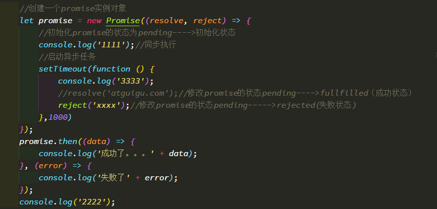
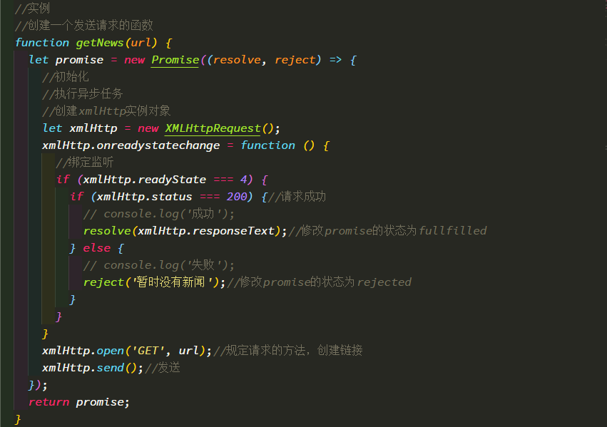
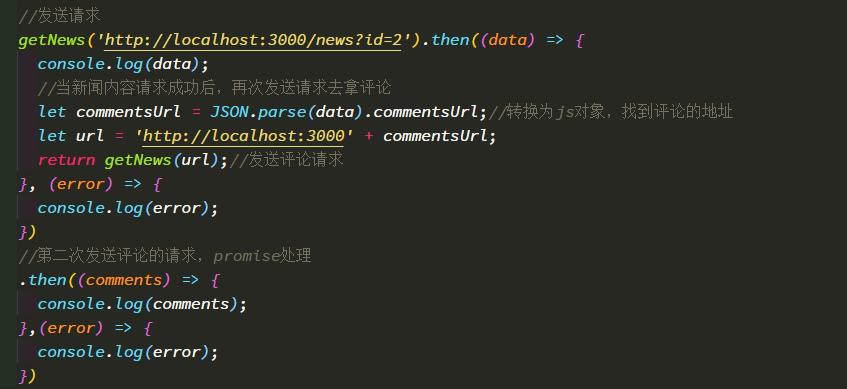

- 理解:
- Promise对象: 代表了未来某个将要发生的事件(通常是一个异步操作)
- 有了promise对象, 可以将异步操作以同步的流程表达出来, 避免了层层嵌套的回调函数(俗称'回调地狱')
- ES6的Promise是一个构造函数, 用来生成promise实例
- 使用promise基本步骤(2步):
- 创建promise对象
let promise = new Promise((resolve, reject) => { //初始化promise状态为 pending //执行异步操作 if(异步操作成功) { resolve(value);//修改promise的状态为fullfilled } else { reject(errMsg);//修改promise的状态为rejected } }) - 调用promise的then()
promise.then(function( result => console.log(result), errorMsg => alert(errorMsg) ))
- 创建promise对象
- promise对象的3个状态
- pending: 初始化状态
- fullfilled: 成功状态
- rejected: 失败状态
应用:
使用promise实现超时处理
使用promise封装处理ajax请求
let request = new XMLHttpRequest(); request.onreadystatechange = function () { } request.responseType = 'json'; request.open("GET", url); request.send();
基本应用 
结合ajax发送异步请求实例  